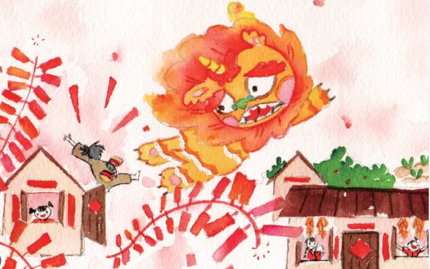

perayaan penting selama 15 hari yang disambut oleh masyarakat Cina di seluruh dunia untuk menandakan permulaan tahun baru mengikut kalendar lunar
Asal usul Tahun Baru Cina berakar umbi daripada legenda seekor raksasa ganas bernama 'Nian' yang akan menyerang kampung pada setiap tahun, menyebabkan penduduk takut untuk keluar dari tempat persembunyian.Penduduk akhirnya menyedari bahawa raksasa ini tidak suka bunyi bising dan warna merah, lalu mereka menakutkannya dengan mercun, bunga api, dan kain merah, yang kemudiannya menjadi tradisi perayaan Tahun Baru Cina hingga kini.
Pemberian wang bertuah (ang pau) oleh orang tua dan yang sudah berkahwin kepada kanak-kanak dan orang muda adalah tradisi biasa.

Tarian ini dipersembahkan untuk memuliakan haiwan ini dan untuk menumpaskan roh jahat.
Hidangan ini, yang kaya dengan herba, disediakan pada hari ketujuh sambutan dan melambangkan kehidupan, rezeki, dan panjang umur.
: Ahli keluarga berkumpul untuk menikmati jamuan istimewa sebagai tanda perpaduan keluarga.
Pembersihan rumah dilakukan beberapa hari sebelum Tahun Baru untuk menyingkirkan nasib malang dan menyambut tahun baru dengan lebih baik.Pada masa yang sama, akiviti pembersihan rumah dilangrangkan sepanjang perayaan ini kerana ini akan menyingkirkan nasib baik.
Warna merah dianggap dapat menakutkan roh jahat dan nasib malang, oleh itu ia banyak digunakan dalam hiasan dan pakaian.